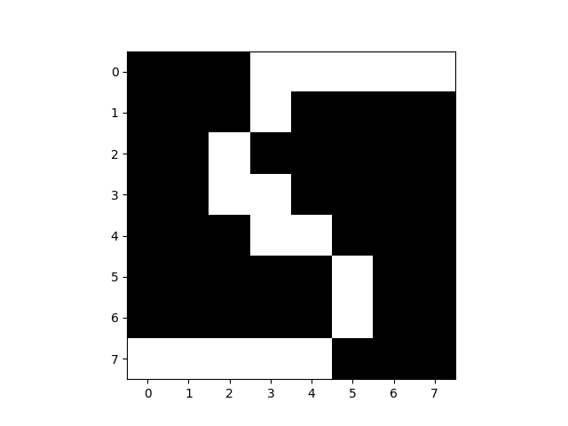
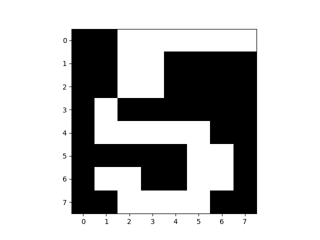
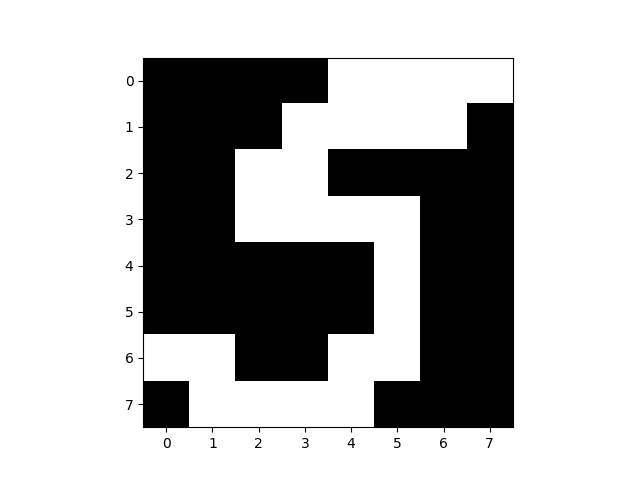

Alttaki ifade bir Boltmann dağılımını gösterir,
\[ P(x;W) = \frac{1}{Z(W)} \exp \bigg[ \frac{1}{2} x^T W x \bigg] \qquad (3) \]
ki \(x\) çok boyutlu ve -1,+1 değerleri içeren bir vektör, \(W\) simetrik ve çaprazında (diagonal) sıfır içeren bir matristir, \(n \times d\) boyutlarındaki bir veri için \(d \times d\) boyutlarında olacaktır. Boltzmann Makinaları (BM), Kısıtlı Boltzmann Makinaları (Restricted Boltzmann Machines) kavramına geçiş yapmadan önce iyi bir durak noktası.
BM \(W\) içinde aslında tüm değişkenlerin ikisel ilişkisini içerir. \(W\) çok değişkenli Gaussian dağılımındaki \(\Sigma\)'da olduğu gibi ikisel bağlantıları saptar. Veriden \(W\)'yu öğrenmek için olurluğu hesaplamak lazım. Olurluk (likelihood)
\[ \prod_{n=1}^{N} P(x^{(n)};W) = \frac{1}{Z(W)} \exp \bigg[ \frac{1}{2} x^{(n)^T} W x^{(n)} \bigg] \]
Log olurluk
\[ \mathcal{L} = \ln \big( \prod_{n=1}^{N} P(x^{(n)};W) \big) = \sum_{n=1}^{N} \bigg[ \frac{1}{2} x^{(n)^T} W x^{(n)} - \ln Z(W) \bigg] \qquad (1) \]
Birazdan \(\frac{\partial \mathcal L}{\partial w_{ij}}\) türevini alacağız, o sırada \(\ln Z(W)\)'nin türevi lazım, daha doğrusu \(Z(W)\)'yi nasıl türevi alınır hale getiririz?
\(Z(W)\) normalizasyon sabiti olduğuna göre, dağılımın geri kalanının sonsuzlar üzerinden entegrali (ya da toplamı) normalizasyon sabitine eşittir,
\[ Z(W) = \sum_x \exp \bigg[ \frac{1}{2} x^T W x \bigg] \]
\[ \ln Z(W) = \ln \bigg[ \sum_x \exp \big( \frac{1}{2} x^T W x \big) \bigg] \]
Log bazlı türev alınca log içindeki herşey olduğu gibi bölüme gider, ve log içindekinin türevi alınırak bölüme koyulur. Fakat log içine dikkatli bakarsak bu zaten \(Z(W)\)'nin tanımıdır, böylece denklemi temizleme şansı doğdu, bölüme hemen \(Z(W)\) deriz, ve türevi log'un içine uygularız,
\[ \frac{\partial}{\partial w_{ij}} \ln Z(W) = \frac{1}{Z(W)} \bigg[ \sum_x \frac{\partial}{\partial w_{ij}} \exp \big( \frac{1}{2} x^T W x \big) \bigg] \]
\[ \frac{\partial}{\partial w_{ij}} \exp \big( \frac{1}{2} x^T W x \big) = \frac{1}{2} \exp \big( \frac{1}{2} x^T W x \big) \frac{\partial}{\partial w_{ij}}x^T W x \qquad (2) \]
(2)'in içindeki bölümü açalım,
\[ \frac{\partial}{\partial w_{ij}}x^T W x = x_i x_j \]
Şimdi (2)'ye geri koyalım,
\[ = \frac{1}{2} \exp \big( \frac{1}{2} x^T W x \big) x_i x_j \]
\[ \frac{\partial}{\partial w_{ij}} \ln Z(W) = \frac{1}{Z(W)} \bigg[ \sum_x \frac{1}{2} \exp \big( \frac{1}{2} x^T W x \big) x_i x_j \bigg] \]
\[ = \frac{1}{2} \sum_x \frac{1}{Z(W)} \exp \big( \frac{1}{2} x^T W x \big) x_i x_j \]
\[ = \frac{1}{2} \sum_x P(x;W) x_i x_j \]
Üstteki son ifadede bir kısaltma kullanalım,
\[ \sum_x P(x;W) x_i x_j = < x_i,x_j >_{P(x;W)} \qquad (4) \]
Artık \(\ln Z(W)\)'nin türevini biliyoruz. O zaman tüm log olurluğun türevine (1) dönebiliriz,
\[ \frac{\partial \mathcal{L}}{\partial w_{ij}} = \sum_{n=1}^{N} \bigg[ \frac{\partial}{\partial w_{ij}} \frac{1}{2} x^{(n)^T} W x^{(n)} - \frac{\partial}{\partial w_{ij}} \ln Z(W) \bigg] \]
\[ = \sum_{n=1}^{N} \bigg[ \frac{1}{2} x_i^{(n)^T}x_j^{(n)} - \frac{\partial}{\partial w_{ij}} \ln Z(W) \bigg] \]
\[ = \sum_{n=1}^{N} \bigg[ \frac{1}{2} x_i^{(n)^T}x_j^{(n)} - \frac{1}{2}< x_i x_j >_{P(x;W)} \bigg] \]
1/2 sabitlerini atalım,
\[ = \sum_{n=1}^{N} \bigg[ x_i^{(n)^T}x_j^{(n)} - < x_i x_j >_{P(x;W)} \bigg] \]
Eğer
\[ < x_i x_j >_{Data} = \frac{1}{N} \sum_{n=1}^{N} x_i^{(n)^T}x_j^{(n)} \]
olarak alırsak, eşitliğin sağ tarafı verisel kovaryansı (empirical covariance) temsil eder. Düzenleyince,
\[ N \cdot < x_i x_j >_{Data} = \sum_{n=1}^{N} x_i^{(n)^T}x_j^{(n)} \]
şimdi eşitliğin sağ tarafı üç üstteki formüle geri koyulabilir,
\[ \frac{\partial \mathcal{L}}{\partial w_{ij}} = N \big[ < x_i x_j >_{Data} - < x_ix_j >_{P(x;W)} \big] \]
Her ne kadar \(N\) veri noktası sayısını gösteriyor olsa da, üstteki ifade bir gradyan güncelleme formülü olarak ta görülebilir, ve \(N\) yerine bir güncelleme sabiti alınabilir. Gradyan güncelleme olarak görülebilir çünkü \(w_{ij}\)'ye göre türev aldık, o zaman bizi \(\mathcal{L}\)'in minimumuna götürecek \(w\) adımları üstte görüldüğü gibidir.
(4)'te görülen \(< x_ix_j >_{P(x;W)}\)'in anlamı nedir? Bu ifade mümkün tüm \(x\) değerleri üzerinden alınıyor ve ikisel ilişkilerin olasılığını "mevcut modele'' göre hesaplıyor. Yani bu ifade de bir korelasyon hesabıdır, sadece veriye göre değil, tüm mümkün değerler ve model üzerinden alınır. Bu hesabı yapmak oldukça zordur, fakat yaklaşıksal olarak Monte Carlo yöntemi ile hesaplanabilir. Nihayet MC ve MCMC metotlarının kullanılma sebebini görmeye başlıyoruz; bu metotlar zaten aşırı yüksek boyutlu, analitik çözümü olmayan, hesaplanamaz (intractable) entegraller (ya da toplamlar) için keşfedilmiştir.
Yani bu ifadeyi hesaplamak için Monte Carlo simulasyonu kullanacağız. Tüm değerleri teker teker ziyaret etmek yerine (ki bu çok uzun zaman alırdı) mevcut modele en olası \(x\) değerleri "ürettireceğiz'', ve bu değerleri alıp sanki gerçek veriymiş gibi sayısal korelasyonlarını hesaplayacağız. Eğer veriler dağılımın en olası noktalarından geliyorlarsa, elimizde veri dağılımı "iyi'' temsil eden bir veri setidir. Daha sonra bu korelasyon hesabını değeri gerçek veri korelasyonunundan çıkartıp bir sabit üzerinden gradyan adımı atmamız mümkün olacak.
Gibbs Örneklemesi (Sampling)
Gibbs örneklemesinin detayları için [5]. Bolzmann dağılımından örneklem almak için bize tek bir değişken (hücre) haricinde diğer hepsinin bilindiği durumun olasılık hesabı lazım, yani koşulsal olasılık \(P(x_i = 1 | x_j, j \ne i)\). Yani \(x\) üzerinde, biri hariç tüm öğelerin bilindiği durumda bilinmeyen tek hücre \(i\)'nin 1 olma olasılık değeri,
\[ P(x_i = 1 | x_j, j \ne i) = \frac{1}{1 + e^{-a_i}} \]
ve,
\[ a_i = \sum_j w_{ij}x_j \]
Bu koşulsal olasılığın temiz / basit bir formül olması önemli, üstteki görülen bir sigmoid fonksiyonu bu türden bir fonksiyondur... Bu fonksiyonlar hakkında daha fazla bilgi [6] yazısında bulunabilir.
Ama, ana formül (3)'ten bu noktaya nasıl eriştik? Bu noktada biraz türetme yapmak lazım. \(x\) vektörü içinde sadece \(x_i\) öğesinin \(b\) olmasını \(x^b\) olarak alalım. Önce koşulsal dağılımda "verili'' olan kısmı elde etmek lazım. O uzaman
\[ P(x_j,j \ne i) = P(x^0) + P(x^1) \]
Bu bir marjinalizasyon ifadesi, tüm olası \(i\) değerleri üzerinde bir toplam alınca geri kalan \(j\) değerlerinin dağılımını elde etmiş oluruz.
\[ P(x_i = 1 | x_j,j \ne i) = \frac{P(x^1)}{P(x^0) + P(x^1)} \]
çünkü \(P(A|B) = P(A,B) / P(B)\) bilindiği gibi, ve \(P(x^1)\) içinde \(x_1=1\) setini içeren tüm veriler üzerinden.
Eşitliğin sağ tarafında \(P(x^1)\)'i bölen olarak görmek daha iyi, ayrıca ulaşmak istediğimiz \(1/1 + e^{-a_i}\) ifadesinde \(+1\)'den kurtulmak iyi olur, böylece sadece \(e^{-a_i}\) olan eşitliği ispatlarız. Bunun her iki denklemde ters çevirip 1 çıkartabiliriz,
\[ 1 / P(x_i = 1 | x_j,j \ne i) = \frac{P(x^0) + P(x^1)}{P(x^1)} \]
\[ = 1 + \frac{ P(x^0)}{P(x^1)} \]
Bir çıkartırsak, \(\frac{ P(x^0)}{P(x^1)}\) kalır. Bu bize ulaşmak istediğimiz denklemde \(e^{-a_i}\) ibaresini bırakır. Artık sadece \(\frac{P(x^0)}{P(x^1)}\)'in \(e^{-a_i}\)'e eşit olduğunu göstermek yeterli.
\[ \frac{ P(x^0)}{P(x^1)} = \exp( x^{0^T}Wx^0 - x^{1^T}Wx^1 ) \]
Şimdi \(x^TWx\) gibi bir ifadeyi indisler bazında açmak için şunları yapalım,
\[ x^TWx = \sum_{k,j} x_kx_jw_{kj} \]
Üstteki çok iyi bilinen bir açılım. Eğer
\[ \sum_{k,j} \underbrace{x_kx_jw_{ij}}_{Y_{kj}} = \sum_{k,j}Y_{kj} \]
alırsak birazdan yapacağımız işlemler daha iyi görülebilir. Mesela \(k=i\) olan durumu dış toplamdan dışarı çekebiliriz
\[ = \sum_{k \ne i}\sum_j Y_{kj} + \sum_{j} Y_{ij} \]
Daha sonra \(j = i\) olan durumu iç toplamdan dışarı çekebiliriz,
\[ = \sum_{k \ne i}( \sum_{j \ne i} Y_{kj} + Y_{ki}) + \sum_{j} Y_{ij} \]
İç dış toplamları birleştirelim,
\[ = \sum_{k \ne i,j \ne i} Y_{kj} + \sum_{k \ne i} Y_{ki} + \sum_{j} Y_{ij} \]
\[ = \sum_{k \ne i,j \ne i} Y_{kj} + \sum_{k} Y_{ki} + \sum_{j} Y_{ij} + Y_{ii} \]
Üstteki ifadeyi \(\exp( x^{0^T}Wx^0 - x^{1^T}Wx^1 )\) için kullanırsak,
\[ \exp \big( \sum_{k} Y_{ki}^0 + \sum_{j} Y_{ij}^0 + Y_{ii}^0 - ( \sum_{k} Y_{ki}^1 + \sum_{j} Y_{ij}^1 + Y_{ii}^1 ) \big) \]
\(\sum_{k \ne i,j \ne i} Y_{kj}\) teriminin nereye gittiği merak edilirse, bu ifade \(i\)'ye dayanmadığı için bir eksi bir artı olarak iki defa dahil edilip iptal olacaktı.
\[ = \exp \big( 0 - ( \sum_{k} Y_{ki}^1 + \sum_{j} Y_{ij}^1 + Y_{ii}^1 ) \big) \]
\(W\)'nin simetrik matris olduğunu düşünürsek, \(\sum_{k} Y_{ki}^1\) ile \(\sum_{j}Y_{ij}^1\) aynı ifadedir,
\[ = \exp \big( - ( 2 \sum_{j} Y_{ij}^1 + Y_{ii}^1 ) \big) \]
\(W\) sıfır çaprazlı bir matristir, o zaman \(Y_{ii}^1=0\),
\[ = \exp \big( 2 \sum_{j} Y_{ij}^1 \big) = \exp (- 2 a_i ) \]
Orijinal dağılım denkleminde \(1/2\) ifadesi vardı, onu başta işlemlere dahil etmemiştik, edilseydi sonuç \(\exp (- a_i)\) olacaktı.
import numpy as np
class Boltzmann:
def __init__(self,n_iter=100,eta=0.1,sample_size=100,init_sample_size=10):
self.n_iter = n_iter
self.eta = eta
self.sample_size = sample_size
self.init_sample_size = init_sample_size
def sigmoid(self, u):
return 1./(1.+np.exp(-u));
def draw(self, Sin,T):
"""
Bir Gibbs gecisi yaparak dagilimdan bir orneklem al
"""
D=Sin.shape[0]
S=Sin.copy()
rand = np.random.rand(D,1)
for i in xrange(D):
h=np.dot(T[i,:],S)
S[i]=rand[i]<self.sigmoid(h);
return S
def sample(self, T):
N=T.shape[0]
# sigmoid(0) her zaman 0.5 olacak
s=np.random.rand(N)<self.sigmoid(0)
# alttaki dongu atlama / gozonune alinmayacak degerler icin
for k in xrange(self.init_sample_size):
s=self.draw(s,T)
S=np.zeros((N,self.sample_size))
S[:,0]=s
# simdi degerleri toplamaya basla
for i in xrange(1,self.sample_size):
S[:,i]=self.draw(S[:,i-1],T)
return S.T
def normc(self, X):
"""
normalizasyon sabitini dondur
"""
def f(x): return np.exp(0.5 * np.dot(np.dot(x,self.W), x))
S = 2*self.sample(self.W)-1
# sozluk icinde anahtar tek x degeri boylece bir
# olasilik degeri sadece bir kere toplanir
res = dict((tuple(s),f(s)) for s in S)
return np.sum(res.values())
def fit(self, X):
W=np.zeros((X.shape[1],X.shape[1]))
W_data=np.dot(X.T,X)/X.shape[1];
for i in range(self.n_iter):
if i % 10 == 0: print 'Iteration', i
S = self.sample(W)
S = (S*2)-1
W_guess=np.dot(S.T,S)/S.shape[1];
W += self.eta * (W_data - W_guess)
np.fill_diagonal(W, 0)
self.W = W
self.C = self.normc(X)
def predict_proba(self, X):
return np.diag(np.exp(0.5 * np.dot(np.dot(X, self.W), X.T))) / self.CFonksiyon draw içinde, tek bir veri satırı için ve sırayla her değişken (hücre) için, diğer değişkenleri baz alıp diğerinin koşulsal olasılığını hesaplıyoruz, ve sonra bu olasılığı kullanarak bir sayı üretimi yapıyoruz. Üretimin yapılması için np.random.rand'dan gelen 0 ve 1 arasındaki birörnek (uniform) dağılımdan bir rasgele sayıyı geçip geçmeme irdelemesi yeterli. Bir Bernoulli olasılık hesabını üretilen bir rasgele değişkene bu şekilde çevirebilirsiniz. Bu niye işler? Üstte belirttiğimiz irdelemeyi rasgele değişken olarak kodlarsak (ki bu da bir Bernoulli rasgele değişkeni olur), ve birörnek rasgele değişken \(U\) olsun,
\[ Y = \left\{ \begin{array}{ll} 1 & U < p \\ 0 & U \ge p \\ \end{array} \right. \]
Bu durumda \(P(X=1) = P(U<p) = p\) olurdu. Neden? Çünkü üstte bir sürekli (continuous) bir birörnek değişken yarattık, ve \(P(U<p) = F_u(p) = p\).
Devam edelim; Çağrı sample ise draw'u kullanarak pek çok veri satırını içeren ve dağılımı temsil eden bir örneklem yaratmakla sorumlu. Bunu her örneklem satırını baz alarak bir sonrakini ürettirerek yapıyor, böylelikle MCMC'nin dağılımı "gezmesi'' sağlanmış oluyor.
Normalizasyon Sabiti
Birazdan göreceğimiz örnek için normalizasyon sabitini de hesaplamamız gerekecek. Niye? Mesela iki farklı BM dağılımını farklı etiketli verilerden öğreniyoruz, sonra test veri noktasını her iki ayrı dağılıma "soruyoruz''? Olasılığı nedir? Bu noktada kesin bir olasılık hesabı istediğimiz için artık \(Z\) bilinmek zorunda. Bu sabitin hesaplanması için ise \(< x_ix_j >_{P(x;W)}\) için olduğu gibi, tüm mümkün \(x\)'ler üzerinden bir toplam gerekir, bu toplam \(\sum_x \exp 1/2 x^T W x\) toplamı. Bu toplamın hesaplanması çok zor olduğu için, yine MCMC'ye başvuracağız. Tek fark alınan örneklemi (3) formülüne geceğiz, ve bir olasılık hesabı yapacağız, ve bu olasılıkları toplayacağız. Tabii aynı \(x\)'i (eğer tekrar tekrar üretilirse -ufak bir ihtimal ama mümkün-) tekrar tekrar toplamamak için hangi \(x\)'lerin üretildiğini bir sözlük içinde hatırlayacağız, yani bir \(x\) olasılığı sadece bir kere toplanacak.
Şimdi ufak bir örnek üzerinde BM'i işletelim.
import boltz
A = np.array([\
[0.,1.,1.,1],
[1.,0.,0,0],
[1.,1.,1.,0],
[0, 1.,1.,1.],
[1, 0, 1.,0]
])
A[A==0]=-1
clf = boltz.Boltzmann(n_iter=50,eta=0.01,sample_size=200,init_sample_size=50)
clf.fit(A)
print 'W'
print clf.W
print 'normalizasyon sabiti', clf.CIteration 0
Iteration 10
Iteration 20
Iteration 30
Iteration 40
W
[[ 0. -0.065 -0.06 -0.055]
[-0.065 0. 0.17 0.105]
[-0.06 0.17 0. -0.09 ]
[-0.055 0.105 -0.09 0. ]]
normalizasyon sabiti 16.4620358997Sonuç \(W\) üstte görüldüğü gibi. Örnek veriye bakarsak 2. satır 3. kolonda artı bir değer var, 1. satır 4. kolonda eksi değer var. Bu beklediğimiz bir şey çünkü 2. ve 3. değişkenlerin arasında bir korelasyon var, \(x_2\) ne zaman 1/0 ise \(x_3\) te 1/0. Fakat \(x_1\) ile \(x_4\) ters bir korelasyon var, birbirlerinin zıttı değerlere sahipler.
Şimdi yeni test verisini dağılıma "soralım'',
test = np.array([\
[0.,1.,1.,1],
[1.,1.,0,0],
[0.,1.,1.,1]
])
print clf.predict_proba(test)[ 0.0730905 0.05692294 0.0730905 ]Görüntü Tanıma
Elimizde el yazısı tanıma algoritmaları için kullanılan bir veri seti var. Veride 0,5,7 harflerinin görüntüleri var. Mesela 5 için bazı örnek görüntüler,
Y = np.loadtxt('../../stat/stat_mixbern/binarydigits.txt')
label = np.ravel(np.loadtxt('../../stat/stat_mixbern/bindigitlabels.txt'))
Y5 = Y[label==5]
plt.imshow(Y5[0,:].reshape((8,8),order='C'), cmap=plt.cm.gray)
plt.savefig('boltzmann_01.png')
plt.imshow(Y5[1,:].reshape((8,8),order='C'), cmap=plt.cm.gray)
plt.savefig('boltzmann_02.png')
plt.imshow(Y5[2,:].reshape((8,8),order='C'), cmap=plt.cm.gray)
plt.savefig('boltzmann_03.png')  
Bu görüntüleri tanımak için BM kullanalım. Eğitim ve test olarak veriyi ikiye ayıracağız, ve eğitim seti her etiketin \(W\)'sini öğrenmek için kullanılacak. Daha sonra test setinde her veri noktalarını her üç BM'ye ayrı ayrı "sorup'' o test verisinin o BM'e göre olasılığını alacağız, ve hangi BM daha yüksek olasılık döndürüyorsa etiket olarak onu kabul edeceğiz. Hangi BM daha yüksek olasılık döndürüyorsa, o BM "bu verinin benden gelme olasılığı yüksek'' diyor demektir, ve etiket o olmalıdır.
from sklearn import neighbors
import numpy as np, boltz
from sklearn.cross_validation import train_test_split
Y = np.loadtxt('../../stat/stat_mixbern/binarydigits.txt')
labels = np.ravel(np.loadtxt('../../stat/stat_mixbern/bindigitlabels.txt'))
X_train, X_test, y_train, y_test = train_test_split(Y, labels, test_size=0.4,random_state=0)
X_train[X_train==0]=-1
X_test[X_test==0]=-1
clfs = {}
for label in [0,5,7]:
x = X_train[y_train==label]
clf = boltz.Boltzmann(n_iter=30,eta=0.05,sample_size=500,init_sample_size=100)
clf.fit(x)
clfs[label] = clf
res = []
for label in [0,5,7]:
res.append(clfs[label].predict_proba(X_test))
res3 = np.argmax(np.array(res).T,axis=1)
res3[res3==1] = 5
res3[res3==2] = 7
print 'Boltzmann Makinasi', np.sum(res3==y_test) / float(len(y_test))
clf = neighbors.KNeighborsClassifier()
clf.fit(X_train,y_train)
res3 = clf.predict(X_test)
print 'KNN', np.sum(res3==y_test) / float(len(y_test))!python testbm.pyIteration 0
Iteration 10
Iteration 20
Iteration 0
Iteration 10
Iteration 20
Iteration 0
Iteration 10
Iteration 20
Boltzmann Makinasi 0.975
KNN 0.975Sonuç yüzde 97.5, oldukça yüksek, ve KNN metotu ile aynı sonucu aldık, ki bu aslında oldukça temiz / basit bir veri seti için fena değil.
Biraz Hikaye
Boltzman Makinalarıyla ilgilenmemizin ilginç bir hikayesi var. Aslında bu metottan haberimiz yoktu, ayrıca mevcut işimizde 0/1 içeren ikisel verilerle çok hasır neşirdik, ve bu tür verilerde ikisel ilişkiler (coöccürence) hesabı iyi sonuçlar verir, ki bu hesap basit bir matris çarpımı ile elde edilir.
import numpy as np
A = np.array([\
[0.,1.,1.,0],
[1.,1.,0, 0],
[1.,1.,1.,0],
[0, 1.,1.,1.],
[0, 0, 1.,0]
])
c = A.T.dot(A).astype(float)
print c [[ 2. 2. 1. 0.]
[ 2. 4. 3. 1.]
[ 1. 3. 4. 1.]
[ 0. 1. 1. 1.]]Burada bakılırsa 2. satır 3. kolon 3 değerini taşıyor çünkü 2. ve 3. değişkenlerin aynı anda 1 olma sayısı tam olarak 3. Sonra acaba bu bilgiyi veri üzerinde hesaplayıp bir kenara koysak bir dağılım gibi kullanamaz mıyız, sonra yeni veri noktasını bu "dağılıma sorabiliriz'' diye düşündük. Biraz matris çarpım cambazlığı sonrası, yeni veri noktası için
x = np.array([0,1,1,0])
print np.dot(np.dot(x.T,c), x) / 27.0gibi sonuçlar alabildiğimizi gördük; Bu değerin ilişki matrisinin tam ortasındaki 4,3,3,4 sayılarının toplamının yarısı olduğuna dikkat edelim. Yani \(x\) çarpımı ilişki matrisinin sadece kendini ilgilendiren kısmını çekip çıkarttı, yani 2. ve 3. değişenleri arasındaki ilişkiyi toplayıp aldı.
Buradan sonra, "acaba bu bir dağılım olsa normalizasyon sabiti ne olurdu?'' sorusuna geldik, ki [4] sorusu buradan çıktı ve bu soruya bomba bir cevap geldi. Sonra diğer okumalarımız sırasında Boltzmann Dağılımına ulaştık, bu dağılımın ek olarak bir \(\exp\) tanımı var (ki türev alımı sırasında bu faydalı), ve tabii öğrenim için daha net bir matematiği var. Biz de maksimum olurluk ile [4]'teki fikrin sayısal kovaryansa ulaştırıp ulaştırmayacağını merak ediyorduk, BM formunda verisel kovaryans direk elde ediliyor. Böylece BM konusuna girmiş olduk.
Bitirmeden önce ufak not, BM'ler Kısıtlı BM (RBM) için bir zıplama tahtası, ve RBM'ler Derin Öğrenimin (Deep Learning) bir türü için kullanılabilir, bu yapay sinir ağlarını birden fazla RBM'leri üst üste koyarak elde etmek mümkün (gerçi son zamanlarda moda yaklaşım evrişimsel ağ -convolutional network- kullanmak).
[1] D. MacKay, Information Theory, Inference and Learning Algorithms, sf. 523
[2] Flaxman, Notebook, http://nbviewer.ipython.org/gist/aflaxman/7d946762ee99daf739f1
[3] Stack Exchange, http://math.stackexchange.com/questions/1095491/from-pxw-frac1zw-exp-bigl-frac12-xt-w-x-bigr-to-sigmoid/
[4] Stack Exchange, http://math.stackexchange.com/questions/1080504/calculating-the-sum-frac12-sum-xt-sigma-x-for-all-x-in-0-1-n
[5] Bayramlı, Istatistik, Monte Carlo, Entegraller, MCMC
[6] Bayramlı, Istatistik, Lojistik Regresyon